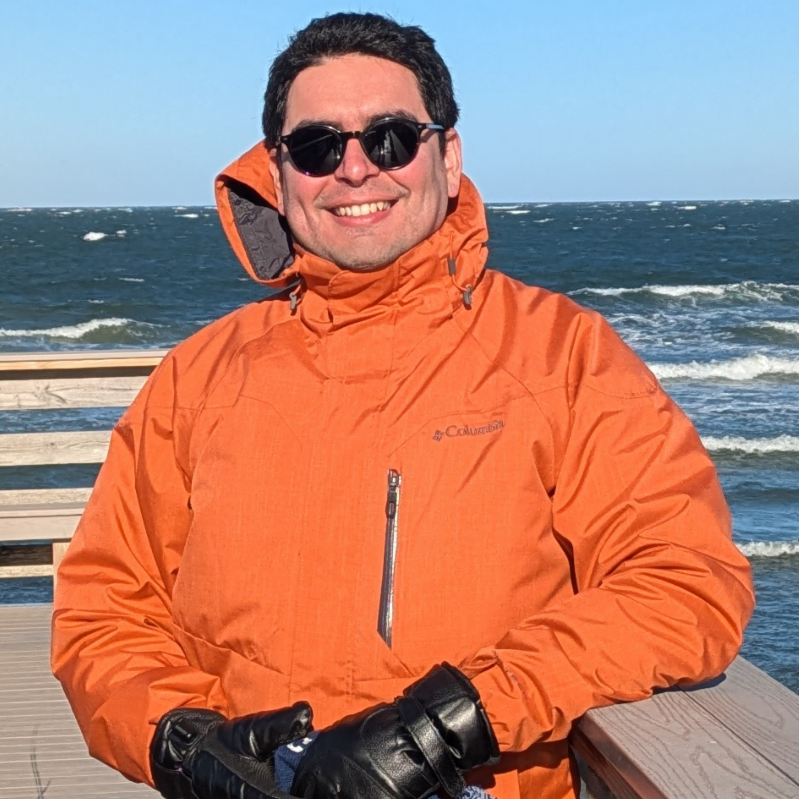

Faculty

Prof. Luis Zambrano-Cruzatty
Dr. Luis Zambrano-Cruzatty is an Assistant Professor of Civil, Construction, and Environmental Engineering at North Carolina State University and an active member of the Anura3D MPM Research Community. He earned his Ph.D. in Civil Engineering from Virginia Tech and previously served as faculty at the University of Maine.
He has expertise in MPM, FEM, constitutive modeling, soil erosion, advanced geotechnical laboratory, among others.
PhD Students

Paula Sarmiento
Research focus: Unsaturated water transport, multi-gas transport, eolian erosion, finite differences, finite elements.
Collaborators
- Aaron Gallant| Associate Professor at the University of Maine.
- Onur Apul| Associate Professor at Penn State University.
- Diane Moug| Associate Professor at Portland State University.
- Arash Khosravifar| Professor at Portland State University.
- Leon Van Paassen| Professor at Arizona State University.
- William Davids| Professor and Department Chair of Civil and Environmental Engineering at the University of Maine.
- Caitlin Howell| Associate Professor at the University of Maine.
- Ankit Kumar| Assistant Professor at the University of Maine.
- Andrew Neils| Associate Professor at the University of Maine.
- Kaleigh Yost| Assistant Professor Penn State University.
- Jorge Macedo| Associate Professor at the Georgia Tech.
Past Members
- Andrés Espinosa| M.S. in Geotechnical Engineering. Graduated from the University of Maine in 2024.
Currently in GEI consultants. - Rakesh Pandit| M.S. in Geotechnical Engineering. Graduated from the University of Maine in 2024.
Currently in ZGH consultants. - Abdul Asiz Umar| M.S. in Geotechnical Engineering. Graduated from the University of Maine in 2024.
Currently in Geosyntec consultants. - Anthony Flores| M.S. in Geotechnical Engineering. Graduated from the University of Maine in 2025.
Currently in TYlin consultants.